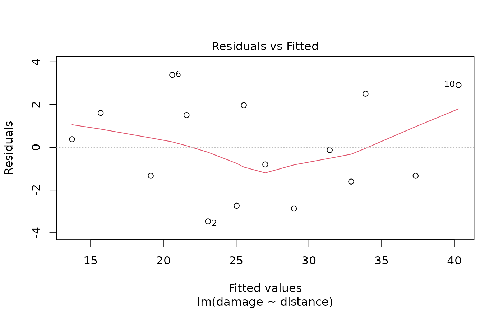
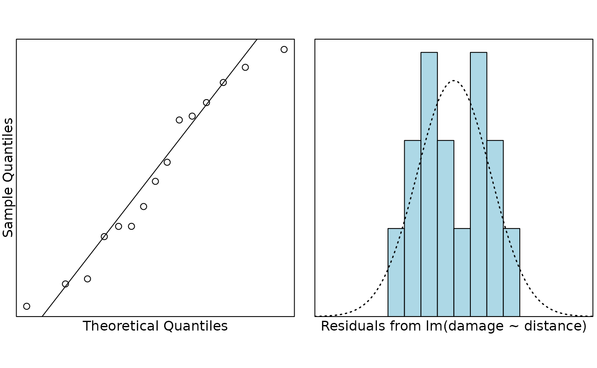

Problem
An insurance company wants to predict the repair cost of damage (in $000’s) to a house in a particular area if a fire occurs. The damage, and distance from the fire station were recorded for a random sample of 15 house fires in the area of interest. They were also particularly interested in predicting the repair cost of fire damage to a randomly chosen house at distances of 1 and 4 miles from the fire station.
The variables measured were:
-
damage: repair cost of damage (in $000’s) -
distance: distance from the fire station (in miles)
Question of interest/goal of the study
We were interested in predicting the cost of damage caused to houses by fires depending on how far away they are from the nearest fire station. In particular, we want to predict the cost of damage to individual randomly chosen houses that are 1 and 4 miles from the fire station.
Read in and inspect the data:
# import the data
fire.df = read.table("fire.txt", header = TRUE)
plot(damage ~ distance, main = "Cost of damage versus distance", data = fire.df)# Comment on the plot
There is, not surprisingly, an increasing trend with the distance from the fire station and the cost of fire damage suffered by the house. The trend looks reasonably linear and the variability around this trend looks reasonably constant.
Fit model and check assumptions
# fit the model
fire.fit <- lm(damage ~ distance, data = fire.df)
# Assumption checks
plot(fire.fit, which = 1)
normcheck(fire.fit)
cooks20x(fire.fit)Observation 10 exceeds the Cook’s distance threshold of 0.4. However, from the fitted vs residuals plot we see that this point is not at all anomalous – it is influential because it is the house that is furtherest from the fire station (i.e., has an “extreme” value for the explanatory variable). Moreover, there are only 15 observations, so it is not surprising that a single point could be influential. There is no reason to remove this point.
# Get summary output and confidence intervals
summary(fire.fit)##
## Call:
## lm(formula = damage ~ distance, data = fire.df)
##
## Residuals:
## Min 1Q Median 3Q Max
## -3.4682 -1.4705 -0.1311 1.7915 3.3915
##
## Coefficients:
## Estimate Std. Error t value Pr(>|t|)
## (Intercept) 10.2779 1.4203 7.237 6.59e-06 ***
## distance 4.9193 0.3927 12.525 1.25e-08 ***
## ---
## Signif. codes: 0 '***' 0.001 '**' 0.01 '*' 0.05 '.' 0.1 ' ' 1
##
## Residual standard error: 2.316 on 13 degrees of freedom
## Multiple R-squared: 0.9235, Adjusted R-squared: 0.9176
## F-statistic: 156.9 on 1 and 13 DF, p-value: 1.248e-08
confint(fire.fit)## 2.5 % 97.5 %
## (Intercept) 7.209605 13.346252
## distance 4.070851 5.767811Get additional predicted output
preddistance.df = data.frame(distance = c(1, 4))
predict(fire.fit, preddistance.df, interval = "prediction")## fit lwr upr
## 1 15.19726 9.67879 20.71573
## 2 29.95525 24.75100 35.15951Method and Assumption Checks
A scatter plot of damage vs distance showed a linear association with approximately constant scatter and so a simple linear regression model was fitted.
We have a random sample of fires so the results should be independent of each other. A slight trend in the residual plot was observed, but does not appear to be of major concern. Observation 10 had a Cook’s distance of about 0.5, but is not an anomalous point. We conclude that all assumptions are reasonably well satisfied.
Our final model is where .
Our model explains 92% of the variation in house fire damage cost.
Executive Summary
An insurance company wanted to predict the cost of damage that occurs when a house catches fire using distance from the fire station as an explanatory variable.
Not surprisingly, there was strong evidence that the further a house is away from a fire station the more fire damage it suffers. We estimate that for each additional mile from the fire station, the expected fire damage cost increases by between $4,100 to $5,800.
Our model explains 92% of the variation in house fire damage and should therefore be a reasonable model for prediction. We predict that if a new fire occurs in a house that is 1 mile from the fire station, the damage will be between $9,700 to $20,700. For a house that is 4 miles from the fire station, we predict the damage will be between $24,800 to $35,200.